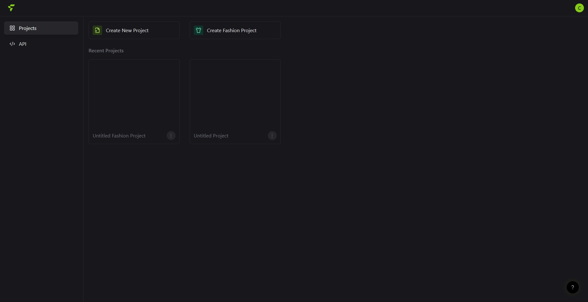

Flair
Flair - это нейросеть, с помощью которой можно генерировать брендированный визуальный контент. Она позволяет создавать фотографии товара для рекламы, презентаций, сайта, соцсетей компании или карточек на маркетплейсах. Обычно для такого результата нанимают фотографа, бронируют студию, собирают реквизит, обрабатывают фотографии в фотошопе. Теперь это может сделать один человек без предварительной подготовки.
